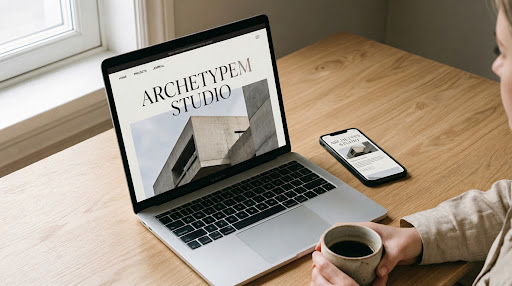
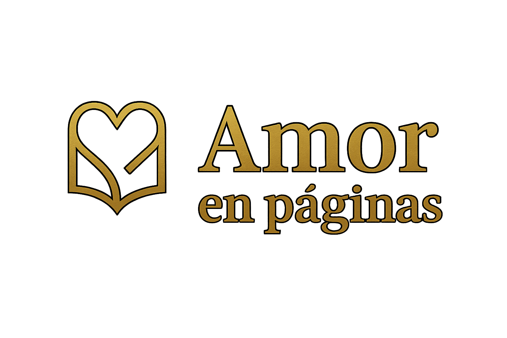
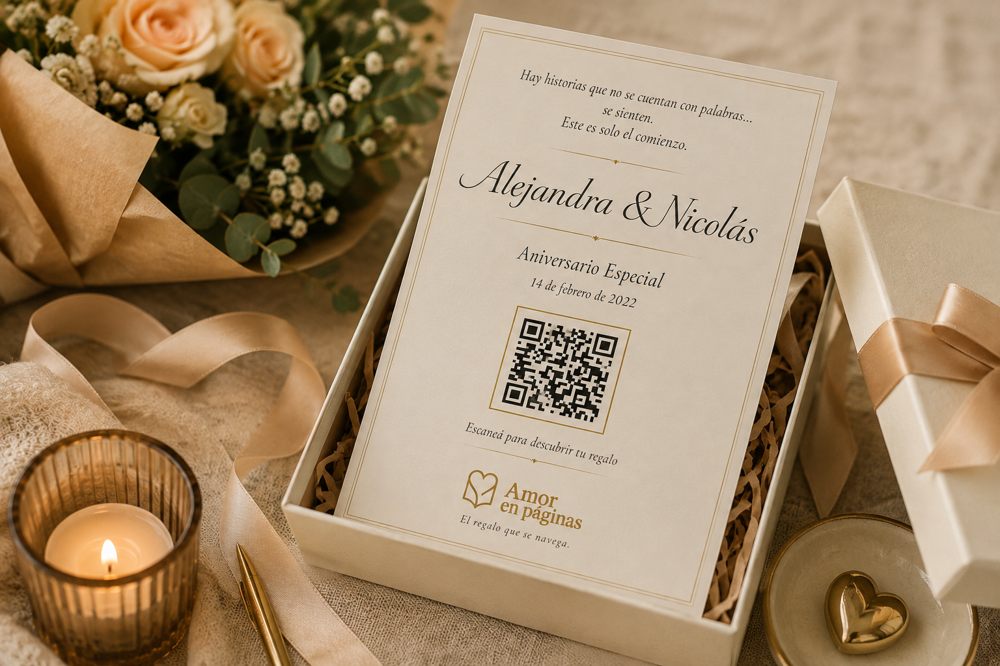

Ayudamos a empresas y negocios a mejorar cómo se muestran, cómo reciben consultas, cómo hacen seguimiento y cómo trabajan puertas adentro. Podemos resolver una sola cosa o conectar varias cuando tiene sentido.
No hace falta tener un problema gigante para perder tiempo o ventas. Muchas veces las trabas de todos los días son simples pero constantes.
Los mensajes llegan por WhatsApp, Instagram, correo y formularios sin un único lugar donde ver la historia completa.
Depender de la memoria o de notas sueltas hace que oportunidades reales se enfríen por falta de un siguiente paso a tiempo.
Cuando las herramientas no conversan entre sí, el equipo carga los mismos datos varias veces y pierde contexto valioso.
Tareas que podrían fluir con reglas claras siguen dependiendo de planillas manuales, avisos cruzados y esfuerzo duplicado.
El cambio no es pasar de la nada al todo. Es un camino gradual que ordena la forma de trabajar y conecta lo que hacés.
Consultas dispersas entre canales
Mensajes repartidos sin un registro central que muestre el estado.
Presupuestos preparados a mano
Copiar y pegar textos con demoras y descuidos habituales.
Seguimiento dependiente de la memoria
Presupuestos enviados que se enfrían por no recordar el contacto a tiempo.
Bandeja de consultas con responsable
Cada consulta entra a una lista clara con fecha, estado y notas.
Fichas de clientes con datos limpios
Historial unificado y accesible para que cualquiera pueda responder.
Documentos comerciales estructurados
Formato prolijo con membrete y precios claros a partir de plantillas.
Paso fluido entre etapas
La consulta nutre la propuesta y la confirmación genera la ficha de entrega.
Alertas de seguimiento a tiempo
Aviso al responsable para consultar al cliente en el momento oportuno.
Herramientas coordinadas
WhatsApp, formularios, correo y planillas que se comunican sin recapturas manuales.
No imponemos herramientas abstractas. Conectamos y ordenamos el flujo para que tu equipo trabaje con claridad, control y foco comercial.
La información viaja de forma continua a lo largo del circuito: cada acción nutre a la siguiente sin recapturas manuales ni tareas duplicadas.
Mensaje recibido por WhatsApp o Web con respuesta inicial y bienvenida.
Ficha central con requerimiento, notas y teléfono estructurado en formato limpio.
El equipo sabe quién atiende, qué etapa cursa el contacto y cuál es el próximo paso.
Presupuesto formal en PDF con membrete, alcance y condiciones listo para enviar.
Recordatorio comercial oportuno y configurable para consultar al cliente con buen tacto.
Propuesta confirmada, carpeta operativa lista y recepción ordenada de materiales.
Circuito ordenado, conectado y acompañado por Tracción Digital
A veces alcanza con resolver una sola cosa bien. Otras veces conviene conectar varias. Estas son algunas de las cosas concretas en las que podemos ayudarte.
Una presencia clara y profesional para mostrar qué hacés, explicar tus servicios y facilitar que te contacten.
Direcciones como ventas@tuempresa.com.ar o contacto@tuempresa.com.ar para trabajar y comunicarte con una imagen más profesional.
Respuestas automáticas, preguntas frecuentes, toma de datos, clasificación de consultas, derivación a una persona y seguimiento. Puede ser un bot guiado o incorporar IA cuando realmente aporta valor.
Configuración y puesta a punto de perfiles, datos de contacto, enlaces y presencia digital para que tus canales estén ordenados y conectados con el negocio.
Registrar quién consultó, qué necesita, qué se respondió y cuál es el próximo paso. Puede ser algo simple o crecer hacia una gestión más completa.
Generación de presupuestos, formularios, pedidos de información y documentos a partir de los datos del cliente.
Conectar WhatsApp, correo, formularios, Google Sheets, Drive y otras herramientas para evitar cargas duplicadas.
Recordatorios, avisos y acciones automáticas para que una consulta, un presupuesto o una tarea importante tengan continuidad.
Esto no es un listado cerrado. Primero entendemos qué necesitás y después vemos cuál es la forma más simple de resolverlo.
Elegí tu prioridad actual. Cada solución se puede implementar de forma puntual o conectada con el resto.
Página web clara, correo con dominio corporativo propio y piezas comerciales que transmiten solidez y trayectoria desde el primer contacto.

Primero vemos qué ya te sirve, qué conviene conectar y qué realmente vale la pena cambiar.
Si una herramienta, una planilla o una forma de trabajo ya les resulta útil, no la cambiamos porque sí.
Vinculamos las herramientas que hoy están separadas para evitar cargas duplicadas, pasos innecesarios y pérdida de información.
Mejoramos formularios, mensajes, documentos o pasos internos para que las tareas sean más claras y lleven menos tiempo.
Si una herramienta quedó chica, complica al equipo o frena el crecimiento, recién ahí proponemos una alternativa mejor.
Podés resolver una necesidad puntual, conectar varias partes de tu negocio o contar con acompañamiento continuo. Empezamos por lo que hoy tenga más sentido para vos.
Para resolver una necesidad puntual de forma clara, sin tener que cambiar todo ni asumir compromisos largos.
Para ordenar varias partes del proceso y hacer que trabajen juntas, desde la consulta inicial hasta la entrega.
Para seguir contando con ayuda después de la implementación y mantener todo funcionando, actualizado y ordenado.
No te dejamos un manual y nos desentendemos. Cuidamos que cada sistema siga funcionando tranquilo mientras tu negocio crece.
Cuatro pasos simples para entender qué necesitás, resolverlo y acompañarte si después querés seguir mejorando.
Conversamos para entender cómo funciona hoy tu negocio. Nos mostrás tus mensajes, planillas y formas de trabajo actuales, sin términos complicados.
Te contamos con claridad qué conviene ordenar primero y qué puede esperar, para no cambiar cosas que todavía te sirven.
Definimos juntos qué vamos a resolver, cómo lo vamos a hacer y qué vas a recibir, probándolo antes para que resulte cómodo de usar.
Después de la implementación podemos seguir acompañándote para cuidar que todo funcione bien y hacer ajustes cuando los necesites.

· También forma parte de Tracción DigitalAmor en Páginas es una unidad de negocio de Tracción Digital, con identidad y propuesta propias.
Amor en Páginas transforma historias, recuerdos y momentos importantes en experiencias digitales personalizadas para regalar y compartir. Puede reunir fotos, mensajes, recuerdos y otros contenidos en una experiencia creada especialmente para quien la recibe.

AEP tiene su propia identidad, público y propuesta. Forma parte del ecosistema Tracción Digital sin confundirse con los servicios comerciales de TD.
Un cierre de año que el equipo puede volver a vivir: reúne fotos, mensajes, momentos y logros en una experiencia digital propia.
Una experiencia creada por Amor en Páginas dentro del ecosistema Tracción Digital.
Ver ejemplo empresarial →Amor en Páginas requirió emoción y detalle. Tu negocio quizás requiera orden en presupuestos, velocidad en WhatsApp o una base limpia. Cada empresa necesita algo distinto.
Respuestas claras, directas y sin letra chica.
No hace falta que sepas qué herramienta necesitás. Contanos cómo trabajás hoy y vemos juntos qué tendría sentido ordenar, mejorar o simplificar primero.
Sin compromiso de compra · Conversación directa y clara